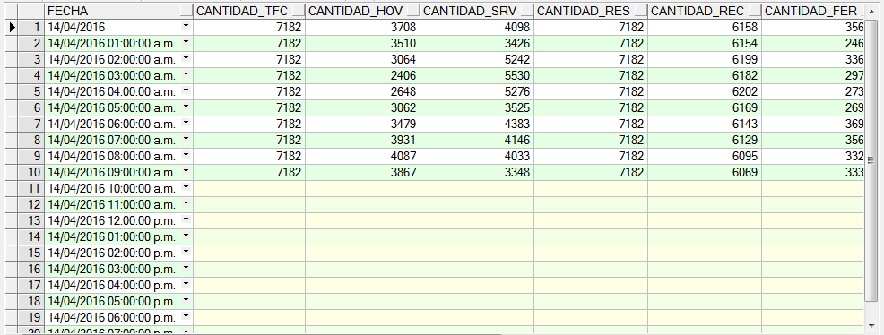
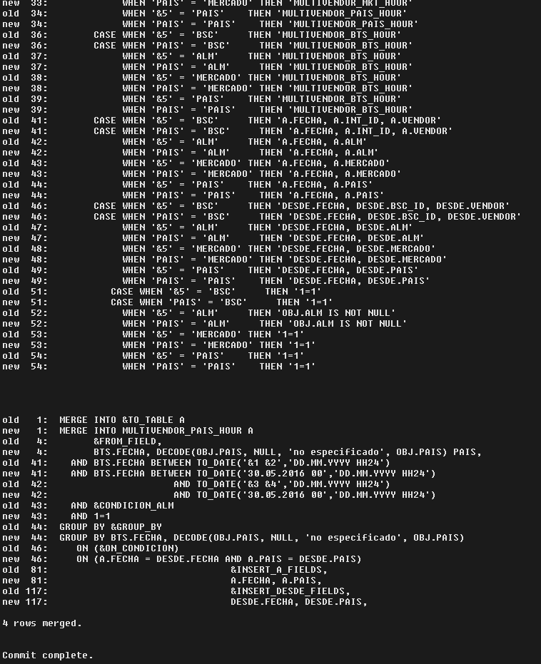

INSTRUCTIVO CONTROL Y REPROCESO DE TABLAS GSM/GPRS¶
1. OBJETIVO¶
El presente instructivo busca explicar y detallar el control y reproceso de datos para las plataformas 2G (GSM/GPRS), para mantener la consistencia de datos de manera diaria.
2. ALCANCE¶
Áreas involucradas: performance y calidad de red, procesos de operaciones y mantenimiento.
3. DEFINICIONES¶
- FD: Fecha desde, en formato DD.MM.YYYY
- FH: Fecha hasta, en formato DD.MM.YYYY
- HD: Hora desde, en formato HH24
- HH: Hora hasta, en formato HH24
- RC: Regional Cluster, también abreviado como OSSRC
- Smart: Base de datos Oracle donde se encuentran las tablas de datos para la red de acceso, incluido GSM y GPRS
- Perdido: Servidor UNIX en donde se importan los XML desde el proveedor, y en donde se encuentra Smart.
4. INSTRUCCIONES OPERATIVAS¶
Para realizar este instructivo, se requiere acceso por SSH a Perdido, y el programa PL/SQL Developer con acceso a Smart. Aquí se referenciarán las consultas presentes en los scripts: Control GSM/GPRS.sql y Controles adicionales GSM/GPRS.sql

- Ingresar al programa PL/SQL Developer –> Ingresar Username
- –> Ingresa Password
4.1. CONTROLES¶
1. Procedimiento Controles RAW:¶
Control_GSM-GPRS_1.RAW.sql¶
Pasos para los controles necesarios en los datos de GSM y GPRS:
- Ejecutar la primera consulta en el archivo Control_GSM-GPRS_1.RAW.sql para verificar si están todos los datos provenientes desde los XML ya insertados en la base de datos.
Esta consulta recibe los siguientes parámetros:
- &1 : Fecha Desde, en formato DD.MM.YYYY (ej: 29.12.2015)
- &2 : Hora Desde, en formato HH24, desde 00 hasta 23
- &3 : Fecha Hasta, en formato DD.MM.YYYY (ej: 29.12.2015)
- &4 : Hora Hasta, en formato HH24, desde 00 hasta 23
Luego de ejecutar la consulta, debe ingresar:
- Fecha Desde
- Hora Desde
- Fecha Hasta
- Hora Hasta
- Regional Clúster

La consulta muestra el siguiente resultado:
REPROCESO¶
En caso de faltante de datos, verificar si se encuentran los XML, y si estos ya han sido procesados o no. Para ello, se debe ejecutar la siguiente consulta (se encuentra en Controles adicionales GSM/GPRS.sql):
Aquí, ajustamos el FILENAME según el RC que nos interese, y la fecha/hora que nos importe.
Ejecutamos la consulta:
SELECT * FROM status_process_etl
WHERE network_element = ‘BTS’
AND FILENAME LIKE ‘%rc2%201512817%.all’
La consulta ejecutada muestra el siguiente resultado:

Los valores en Status pueden ser tres posibles:
- 0: Sin procesar, con lo cual está en cola de espera para ser procesado
- 1: Procesado
- 5: En procesamiento, con lo cual ese archivo está tratándose para insertar los datos a la BD.
También nótese que hay 14 elementos, que corresponden a las 14 mediciones diferentes, para el RC seleccionado, en la hora seleccionada.
En caso de que si, se pueden volver a solicitar para reprocesar, para ello ejecutar la siguiente sentencia, siempre ajustando el valor del RC y de la fecha/hora:


Ingresamos la fecha y hora:

2. Procedimiento Controles HOUR:¶
Control_GSM-GPRS_2.HOUR.sql¶
Ejecutar las consultas en las tablas hour de GSM y GPRS (presentes en Control GSM/GPRS.sql).
Cuando se ejecutan ambas consultas, reciben los siguientes parámetros:
- &1 : Fecha Desde, en formato DD.MM.YYYY (ej: 29.12.2015)
- &2 : Fecha Hasta, en formato DD.MM.YYYY (ej: 29.12.2015)

La consulta nos muestra como resultado:

REPROCESO¶
En caso de que haya faltante por regional, ejecutar en Perdido las siguientes instrucciones:
- Para GPRS: Ejecutar el siguiente comando en la consola:
cd /calidad/nokia/gsm/hourly/enqueuer
Luego se deben ejecutar los siguientes scripts:

Se debe modificar:
- Fecha Desde, en formato DD.MM.YYYY (ej: 29.12.2015)
- Hora Desde, en formato HH24, desde 00 hasta 23
- Fecha Hasta, en formato DD.MM.YYYY (ej: 29.12.2015)
- Hora Hasta, en formato HH24, desde 00 hasta 23
- Regional Clúster, cuyos valores válidos son OSSRC1, OSSRC2, OSSRC3

Nos muestra:
En caso de haber faltante por tipo de mercado, se corren las siguientes consultas en Perdido:
cd /calidad/multivendor/gsm/hourly
sqlplus -S / @ gsm_nsn_hour.sql &1 &2 &3 &4 BSC
sqlplus -S / @ gsm_nsn_hour.sql &1 &2 &3 &4 ALM
sqlplus -S / @ gsm_nsn_hour.sql &1 &2 &3 &4 MERCADO
sqlplus -S / @ gsm_nsn_hour.sql &1 &2 &3 &4 PAIS
Luego de completar las horas faltantes a nivel Hour, se debe recalcular los niveles superiores y tableros.
En consola, nos muestra el contenido de run2.sh:

Luego ejecutamos run2.sh:

Nos muestra como resultado:
3. Procedimiento Controles DAY & DAYBH:¶
Control_GSM-GPRS_3.DAY-BH.sql¶
Ejecutar las consultas en las tablas DAY BH de GSM y GPRS (presentes en Control GSM/GPRS.sql).
Cuando se ejecutan ambas consultas, reciben los siguientes parámetros:
- &1 : Fecha Desde, en formato DD.MM.YYYY (ej: 29.12.2015)
- &2 : Fecha Hasta, en formato DD.MM.YYYY (ej: 29.12.2015)
La consulta nos muestra como resultado:

REPROCESO¶
En caso de que haya faltante por regional, Ejecutar el siguiente comando en la consola:
GSM
cd /calidad/multivendor/gsm/daily
Luego se deben ejecutar los siguientes scripts:
nohup multivendor_day_rec.sh 27.06.2017 27.06.2017 B & (done)
GPRS
/calidad/multivendor/gprs/daily
Luego se deben ejecutar los siguientes scripts:
nohup multivendor_gprs_rec.sh 27.06.2017 27.06.2017 & (done)
4. Procedimiento Controles ISABHW:¶
Control_GSM-GPRS_5.ISABHW.sql¶
Ejecutar las consultas en las tablas ISABHW de GSM y GPRS (presentes en Control GSM/GPRS.sql).
Cuando se ejecutan ambas consultas, reciben los siguientes parámetros:
- &1 : Fecha Desde, en formato DD.MM.YYYY (ej: 29.12.2015)
- &2 : Fecha Hasta, en formato DD.MM.YYYY (ej: 29.12.2015)
La consulta nos muestra como resultado:

REPROCESO¶
En caso de que haya faltante por regional, Ejecutar el siguiente comando en la consola:
cd /calidad/multivendor/gsm/summary
Luego se deben ejecutar los siguientes scripts:
multivendor_week_rec.sh 1 (done)